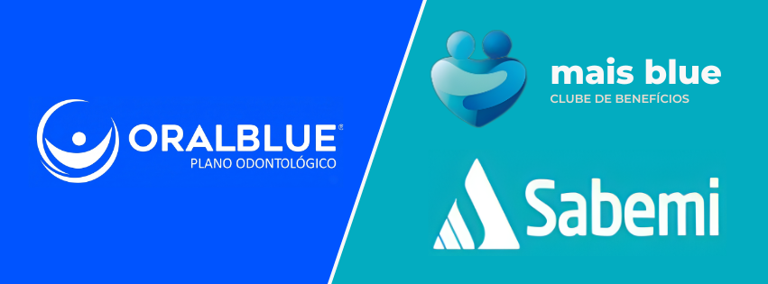
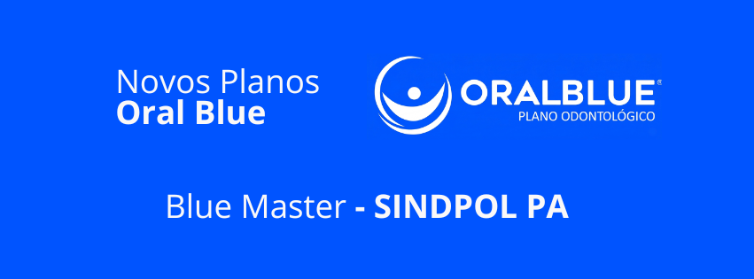

Planos Odontológicos
Veja quais os benefícios, serviços e consultas que você poderá ter direito.

Veja quais os benefícios, serviços e consultas que você poderá ter direito.
Confira quais benefícios você poderá adquirir.

Confira os benefícios que você terá direito
O agendamento é feito diretamente na plataforma, com escolha
de data e horário conforme conveniência do Segurado e
disponibilidade do profissional. Após a confirmação, o
Segurado recebe email ou notificação com os dados da consulta
e o link de acesso à sala virtual.
O cancelamento ou reagendamento pode ser feito com
antecedência mínima de 24 horas. Consultas não realizadas por
ausência do Segurado podem ser consideradas concluídas.
O serviço é destinado a casos eletivos e não substitui o
atendimento de urgência ou emergência.
A) Casos de urgência ou emergência;
B) Solicitação de exames de imagem ou laboratoriais;
C) Consultas de retorno ou acompanhamento
continuado;
D) Atestados retroativos ou laudos periciais;
E) Prescrições de medicamentos controlados (tarja
preta);
F) Atendimento veterinário.
TRATA-SE DE UM SERVIÇO QUE NÃO REPRESENTA OU SUBSTITUI UMA
CONSULTA MÉDICA PRESENCIAL PARA TRATAMENTOS DE
SINTOMAS/CONDIÇÕES CLÍNICAS DE MAIOR GRAVIDADE, COMO POR
EXEMPLO HEMORRAGIAS, FRATURAS ÓSSEAS, INFARTOS, ANEURISMAS
ENTRE OUTRAS ENFERMIDADES CONSIDERADAS GRAVES.
Considerando que o Segurado passará por um pronto atendimento
para estabilização e orientações pontuais, cada caso será
considerado individualmente, desta forma, em alguns casos o
Segurado poderá não receber atestados, pedidos de exames ou
prescrição médica.
Este serviço de Telemedicina estará disponível para o Segurado
enquanto estiver permitido pela Agência Nacional de Saúde - ANS
e/ou pelo Conselho Federal de Medicina - CFM.
Atendimento Médico Online oferece consultas médicas por
videoconferência com profissionais clínicos gerais, para casos
de baixa complexidade. O serviço permite atendimento imediato,
orientação médica e, quando necessário, emissão de prescrição
digital e atestado médico eletrônico, conforme avaliação
profissional. O serviço é indicado para sintomas leves como
febre, dor de cabeça, tosse, desconfortos digestivos, alergias,
náuseas, irritações de pele, dor de garganta e sintomas
respiratórios leves.
O serviço destina-se à Segurados maiores de 16 anos. Menores
podem ser atendidos se acompanhados por responsável legal.
O Segurado deve efetuar login com CPF e senha cadastrados,
selecionar “Atendimento Médico Online” e clicar em “Falar com um
Médico”. O Segurado será direcionado à sala virtual da consulta
e atendido pelo médico disponível no momento, de forma segura e
criptografada.
OBS: Para 1º Acesso, A senha é "MUDAR" e os 3 primeiros
digitos do CPF do Segurado (EX: MUDAR123).
O Segurado deve acessar a plataforma através do link
https://sabemiseguradora.vidaclass.com.br/
garantindo ambiente privado e boa conexão de internet durante a
consulta. O Segurado deve efetuar login com CPF e senha
cadastrados, selecionar “Atendimento Médico Online” e clicar em
“Falar com um Médico”. O Segurado será direcionado à sala
virtual da consulta e atendido pelo médico disponível no
momento, de forma segura e criptografada.
OBS: Para 1º Acesso, A senha é "MUDAR" e os 3 primeiros
digitos do CPF do Segurado (EX: MUDAR123).
O Segurado poderá acionar a assistência pelo Whatsapp (11)
98940-6013, indicando qual a sua necessidade, deverá digitar seu
CPF e posteriormente será transferido a um atendente ao qual
dara todo o suporte para o acionamento. Será encaminhado um link
para e-mail ou whatsapp para realização da consulta.
OBS: O CPF do segurado ficará vinculado ao número de telefone
utilizado no primeiro acionamento. Portanto, é fundamental que
apenas o próprio segurado faça a solicitação de
atendimento.
O Segurado poderá acionar a assistência através da central de Atendimento, informando seu CPF e relatando sua necessidade, posteriormente será transferido a um atendente ao qual dara todo o suporte para o acionamento. Será encaminhado um link para e-mail ou whatsapp para realização da consulta.
Se, em consequência de Acidente Pessoal, o Segurado tiver que
permanecer hospitalizado por período superior a 3 (três) dias,
não havendo nenhum outro adulto ou familiar que possa tomar
conta dos dependentes menores de 14 (quatorze) anos, a central
de atendimento instruirá o Segurado de como proceder com as
despesas com a contratação de uma baby-sitter (babá) até o
limite do plano contratado.
A responsabilidade da central de atendimento está limitada às
despesas havidas com a contratação de uma "baby-sitter" (babá)
ou utilização de um berçário pelo Segurado até que alguém de
confiança deste seja localizado com a finalidade de tomar conta
das crianças.
Tipo de Evento: Acidente pessoal do Segurado; Dependentes
menores de 14 (quatorze) anos.
LIMITE DO SERVIÇO: Mão de obra do prestador até R$ 150,00
(cento e cinquenta reais) por dia, limitado até 3 (três)
diarias e 01 (um) acionamento por ano de vigência do
seguro.
Se o Segurado não conseguir acessar o imóvel devido a um evento
emergencial ou não emergencial, a central de atendimento enviará
um profissional e cobrirá os custos da mão de obra para abrir a
porta, se for tecnicamente possível. Caso seja necessário trocar
o cilindro e/ou miolo da fechadura por motivos de segurança ou
ausência de chave reserva, a central também arcará com os custos
de mão de obra, das peças e fornecerá duas chaves simples.
Para este serviço, não está previsto a troca de segredos de
portas, fechaduras tetra ou eletrônica, ou confecção de novas
chaves do tipo tetra ou ponto.
LIMITE DO SERVIÇO: Até R$ 200,00 (duzentos reais) para
Fechadura Simples, Até R$ 400,00 (quatrocentos reais) para
Fechadura Digital e 02 (duas) utilizações por anos de vigência
do seguro.
Em caso de evento não emergencial que impeça o acesso a cômodos
internos do imóvel, a central enviará um profissional e cobrirá
a mão de obra para abertura da porta, se tecnicamente possível.
Se for necessário trocar o cilindro e/ou miolo da fechadura por
segurança ou falta de chave reserva, a central também cobre os
custos das peças e da mão de obra, além de fornecer duas chaves
simples ao Segurado.
Tipo de Evento: Perda, Quebra de chaves na fechadura;
Roubo ou furto das chaves. No caso de instalação de fechadura
digital: Travamento da porta, bateria descarregada e Instalação
- Fechadura Digital.
LIMITE DO SERVIÇO: Até R$ 200,00 (duzentos reais) para
Fechadura Simples, Até R$ 400,00 (quatrocentos reais) para
Fechadura Digital e 02 (duas) utilizações por anos de vigência
do seguro.
Os serviços abaixo mencionados visam atender o Segurado na
inspeção da sua residência a título não emergencial e de acordo
com a sua necessidade.
Tipo de Evento: A pedido do Segurado.
LIMITE DE UTILIZAÇÃO: Mão de obra do prestador até R$ 500,00
(quinhentos reais) para execução de até 03 (três) destes
serviços 01 (uma) vez por ano de vigência do seguro.
Se, em consequência de Evento Emergencial, ocorrer o
destelhamento parcial do Imóvel e sendo necessário e
tecnicamente possível (por exemplo, mas não se limitando, se a
estrutura de suporte do telhado disponível e o vão livre
comporte os materiais utilizados para cobertura provisória; se
for possível de acordo com as regras de segurança dos
profissionais envolvidos) a central de atendimento providenciará
a cobertura provisória do telhado com até 20 (vinte) metros
quadrados de lona plástica ou material apropriado com a
finalidade de proteger o Imóvel.
Tipo de Evento: Destelhamento parcial do imóvel.
LIMITE DO SERVIÇO: Até R$ 400,00 (quatrocentos reais) por
Evento, e 02 (dois) acionamentos por ano de vigência do
seguro.
Se solicitado pelo Segurado, a central de atendimento
providenciará o envio de um Profissional para reparo de
eletrodomésticos do tipo Linha Branca e eletroeletrônicos do
tipo Linha Marrom, elegíveis e se responsabilizará pelo custo de
mão de obra de profissionais especializados e dos custos de
peças básicas para reparo do equipamento danificado.
São considerados aparelhos de Linha Branca:
eletrodomésticos utilizados normalmente em áreas como cozinha e
lavandeira (freezer, refrigerador, máquina de lavar e/ou secar
roupas, fogão, frigobar, microondas, fornos elétricos, cooktops
elétricos).
São considerados aparelhos de Linha Branca:
eletroeletrônicos como televisores, aparelhos de som, aparelhos
de DVD, home theater e telefones sem fio.
Tipo de Evento: Reparo de eletrodomésticos de linha
branca e eletrodomésticos de linha marrom.
LIMITE DO SERVIÇO: Até R$ 300,00 (trezentos reais) e 02 (dois)
acionamentos por ano de vigência do seguro.
Em consequência de problemas hidráulicos ou em situações em que
o Imóvel estiver alagado ou em risco de alagamento, a central de
atendimento providenciará o envio de um profissional e arcará
com os custos de mão de obra e de peças básicas para conter
provisoriamente, desde que tecnicamente possível, a situação ao
qual o imóvel se encontra. O serviço será prestado
exclusivamente em tubulação aparente, sem que haja necessidade
de utilização de qualquer equipamento de detecção eletrônica,
bem como não será coberto a execução de mão de obra em canos de
ferro e/ou cobre.
Tipo de Evento: Problemas Hidráulicos.
LIMITE DO SERVIÇO: Até R$ 200,00 (duzentos reais) por Evento e
02 (dois) acionamentos por ano de vigência do seguro.
Em consequência de problemas elétricos, definidos neste
regulamento, a central de atendimento providenciará o envio de
um profissional e arcará com os custos de mão de obra e de peças
básicas para conter a situação e, desde que possível
tecnicamente, executar o reparo definitivo para restabelecimento
da energia elétrica.
Tipo de Evento: Problemas Elétricos.
LIMITE DO SERVIÇO: Até R$ 200,00 (duzentos reais) por Evento e
02 (dois) acionamentos por ano de vigência do seguro.
Se, em consequência de Sinistro no Imóvel, ocorrer deslocamento
ou perigo iminente de queda da antena receptiva de sinais, a
central de atendimento arcará com o envio e custo de mão de obra
um Prestador para realizar a fixação da antena, ou mesmo
retirá-la para evitar riscos maiores às áreas comuns da
Residência, desde que tecnicamente possível. Os custos com
conserto da antena, antenas de TV por assinatura, sintonia de
canais ou imagem, ou substituição de peças da antena serão de
responsabilidade exclusiva do Segurado. A prestação do serviço
está condicionada à fixação de antenas VHF ou UHF e não se
estende a antenas coletivas, TV por assinatura ou parabólica. A
Assistência Residencial Eletroassist não compreende a sintonia
dos canais ou imagem, tão pouco cabeamento.
Tipo de Evento: Fixação da antena em caso de Sinistro no
Imóvel.
LIMITE DO SERVIÇO: Até R$ 400,00 (quatrocentos reais) e 02
(dois) acionamentos por ano de vigência do seguro.
Se, em consequência de Evento Emergencial e for verificada a
necessidade de desocupação do Imóvel não havendo quem possa
tomar conta dos animais domésticos, a central de atendimento se
encarregará das despesas com a guarda dos animais em local
apropriado.
Tipo de Evento: Desocupação do Imóvel.
LIMITE DO SERVIÇO: Até R$ 100,00 (cem reais) em custo de
hospedagem por Evento por dia, sendo Até 4 (quatro) diárias
por Evento, e limite de 01 (um) acionamento por ano de
vigência do seguro.
Se, em consequência de Evento Emergencial e for verificada que o
Imóvel se encontra em Situação Inabitável, a central de
atendimento se encarregará da acomodação em hotel do (s)
Segurado (s) conforme limites estabelecidos abaixo.
Neste serviço estão excluídas quaisquer despesas que não
integrem a diária, tais como, telefonemas, frigobar e
similares, sendo tais despesas de responsabilidade exclusiva
do Segurado.
Tipo de Evento: Imóvel em Situação Inabitável.
LIMITE DO SERVIÇO: R$ 150,00 (cento e cinquenta reais) em
custo de hospedagem por Evento por dia, sendo até 4 (quatro)
diárias por Evento e 02 (dois) acionamentos por ano de
vigência do seguro.
A central de atendimento realizará a instalação e/ou
substituição de ventilador de teto, manual ou de controle
remoto, no local indicado pelo Segurado, desde que tecnicamente
possível. A central de atendimento não se responsabiliza pelo
custo com os equipamentos utilizados na instalação ou
substituição.
Tipo de Evento: A pedido do Segurado.
LIMITE DO SERVIÇO: Até R$ 300,00 (trezentos reais) e 02 (duas)
utilizações por ano de vigência do seguro.
Se, em consequência de evento Emergencial, que dificulte a
utilização do Imóvel, de tal maneira que os serviços de
profissionais de limpeza possam viabilizar a reentrada do
segurado, ou a menos minimizar os efeitos, preparando o mesmo
para um reparo posterior, a central de atendimento se
respnsabilizará pelas despesas de mão de obra de um Prestador
conforme limites especificados a seguir.
Com exceção do sabão, a central de atendimento não se
responsabiliza por qualquer despesa com material indicado pelo
profissional para a limpeza superficial do local.
Estão excluídos deste serviço: eliminação de fungos e/ou
bactérias, higienização de tapetes e carpetes, manutenção de
piscinas, jardins, retirada de entulho e locação de caçamba ou
outros equipamentos de limpeza.
Não estão incluídos serviços de "limpeza fina", ao qual é
realizada por outro tipo de profissional (faxineira).
Em caso de queda de árvores e existência de entulhos oriundos
de sinistro, a retirada destes serão de responsabilidade do
Segurado.
Tipo de Evento: Sinistro no Imóvel.
LIMITE DO SERVIÇO: Até R$ 300,00 (trezentos reais) por Evento,
e 01 (um) acionamento por ano de vigência do seguro.
Se, em consequência de Evento Emergencial constatar-se que o
Imóvel se encontra em Situação Inabitável ou que a cozinha e
área de serviço tenham ficado inutilizáveis, a central de
atendimento se encarregará das despesas com restaurantes e
serviço de lavanderia. Neste caso, o Segurado será instruído
pela Central de Atendimento como proceder.
Tipo de Evento: Impossibilidade de utilização da cozinha
e da área de serviço pelo Segurado.
LIMITE DO SERVIÇO: R$ 400,00 (quatrocentos reais) em custos
com restaurante e lavanderia por Evento e 02 (dois)
acionamentos por ano de vigência do seguro.
Se, em consequência de Acidente Pessoal, o Segurado tiver que
permanecer hospitalizado ou impossibilitado de se mover por
período superior a 7 (sete) dias, não havendo nenhum outro
adulto ou familiar que possa providenciar a limpeza da
Residência, a central de atendimento se responsabilizará pelas
despesas com a contratação de uma faxineira indicada pelo
Segurado (nesse caso, o Segurado será instruído pela Central de
Atendimento como proceder).
Tipo de Evento: Acidente pessoal do Segurado.
LIMITE DO SERVIÇO: R$ 150,00 (cento e cinquenta reais) por
dia, limitado até 3 (três) diarias por Evento e 01 (um)
acionamento por ano de vigência do seguro.
Em caso de solicitação do Segurado, a Central de Atendimento se
encarregará de transmitir Mensagens Urgentes a pessoas por ele
indicadas (parentes ou empresa em que trabalha), dentro do
território nacional. A central de atendimento se responsabiliza
pelo custo com ligações locais ou interestaduais para
transmissão da mensagem.
Tipo de Evento: A pedido do segurado.
LIMITE DO SERVIÇO: Não possui limite de utilizações.
A Assistência Residencial se encarregará:
* Mudança até local provisório indicado pelo Segurado para a
guarda dos objetos;
* Guarda de objetos e bens dos cômodos impactados até a
conclusão da reforma ou reparos no Imóvel.
O local para guarda de objetos e bens é de escolha do Segurado,
desde que observado as limitações estabelecidas no
regulamento.
Tipo de Evento: Imóvel em situação inabitável; Reparos ou
reforma no imóvel.
LIMITE DO SERVIÇO: Até R$ 400,00 (quatrocentos reais) por
Evento e 02 (dois) acionamentos por ano de vigência do
seguro.
Se, em consequência de evento Emergencial, e o Imóvel ficar
vulnerável em função de danos às portas, janelas, fechaduras ou
qualquer outra forma de acesso, colocando em risco as pessoas
e/ou bens existentes em seu interior, a central de atendimento
providenciará o envio de 01 (um) profissional que atuará como
vigilante, sendo esse desarmado, de acordo com disponibilidade
local e limites especificados a seguir. O Segurado será
responsável por garantir condições mínimas ao Profissional,
como, por exemplo, disponibilidade de local coberto, acesso a
sanitário, etc.
Tipo de Evento: Sinistro no Imóvel.
LIMITE DO SERVIÇO: Mão de obra de até R$ 550,00 (quinhentos e
cinquenta reais) por Evento, até 2 (dois) dias de proteção por
Evento e 02 (dois) acionamentos por ano de vigência do
seguro.
Para utilização das Assistências, o Segurado deverá seguir,
sempre e antes de ser tomada qualquer providência com o imóvel
ou pessoas envolvidas, os seguintes procedimentos, sob pena de
perder o direito à utilização da Assistência:
A) Contatar a Central de Atendimento
0800 880 7515 tão logo o Evento ocorra e fornecer as
informações solicitadas de forma clara e completa para que seja
providenciado o serviço;
B) Seguir as instruções da Central de Atendimento e
providenciar as medidas necessárias a fim de evitar o
agravamento das consequências do Evento.
Após o fornecimento pelo Segurado das informações acima
descritas, a Central de Atendimento acionará um profissional ao
local do Evento para prestar a Assistência.
A Assistência Residencial Eletroassist será prestada de acordo
com o local da ocorrência, a infraestrutura, a natureza do
Evento, a urgência requerida no atendimento e somente se o
Domicílio apresentar impedimento ou dificuldade de habitação, em
decorrência de ter sido atetado por um ou mais Eventos
previstos. Não serão pagos quaisquer valores no âmbito da
Assistência Residencial caso se constate:
A) Que o Segurado não preenche os requisitos de
elegibilidade descritos neste regulamento para o acionamento da
Assistência Residencial;
B) Que o Segurado contratou profissional sem realizar o
prévio contato com a Central de Atendimento;
C) Que o Segurado deixou de encaminhar qualquer documento
ou informação essencial solicitada pela Central de Atendimento
para devida prestação da Assistência.
Caso, durante a espera do Prestador, ocorram quaisquer
alterações no quadro inicialmente informado pelo Segurado
intercorrências, imprevistos e/ou novos fatos, que afetem ou
possam afetar a Assistência acionada, o Segurado deverá entrar
em contato com a Central de Atendimento para as providências
cabíveis.
O Segurado não poderá recusar o atendimento do
Prestador sem recusa justificada, sendo certo que será computada
para cálculo dos acionamentos previstos por este regulamento.
(91) 99963-5260 ou (91) 98164-3641 - Gomes
24 (vinte e quatro) horas por dia e 07 (sete) dias por
semana.
segunda a sexta-feira das 08:00 as 18:00 horas - exceto
feriados.
24 (vinte e quatro) horas.

Seu sorriso com mais proteção
O Oral Blue foi pensado para facilitar o acesso aos cuidados odontológicos,
oferecendo acompanhamento preventivo, consultas e suporte para necessidades
clínicas mais comuns do dia a dia.
O objetivo é garantir praticidade, previsibilidade e proteção para quem
quer manter a saúde bucal em dia.
O usuário pode contar com atendimento odontológico para avaliação,
orientação e encaminhamento dentro da rede disponível, conforme regras do plano.
Em situações emergenciais, o suporte é direcionado para atendimento rápido,
respeitando a cobertura contratada.
O plano é indicado para quem deseja ter acesso recorrente a cuidados odontológicos, com foco em prevenção, acompanhamento e solução de demandas clínicas essenciais.
Consulte os canais oficiais de atendimento e a rede disponível para localizar
clínicas, profissionais e orientações de uso do plano.
Tenha seus dados em mãos no momento do atendimento para agilizar a validação
e o direcionamento correto.
Os atendimentos seguem a disponibilidade da rede credenciada e as condições
previstas no produto contratado.
Para procedimentos específicos, recomenda-se confirmação prévia das regras e
elegibilidade.